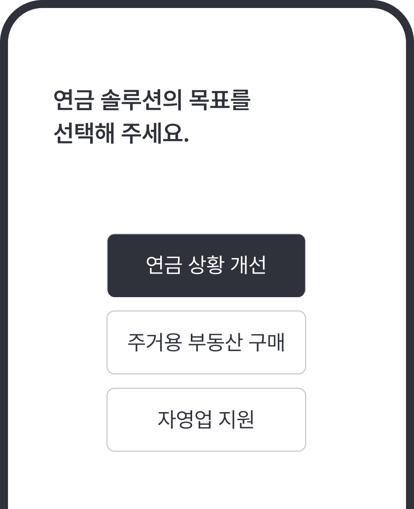
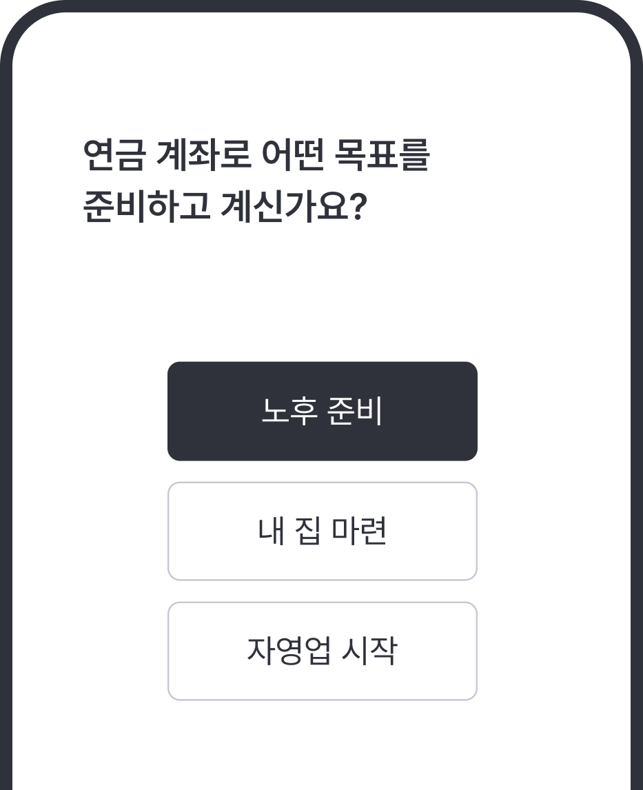
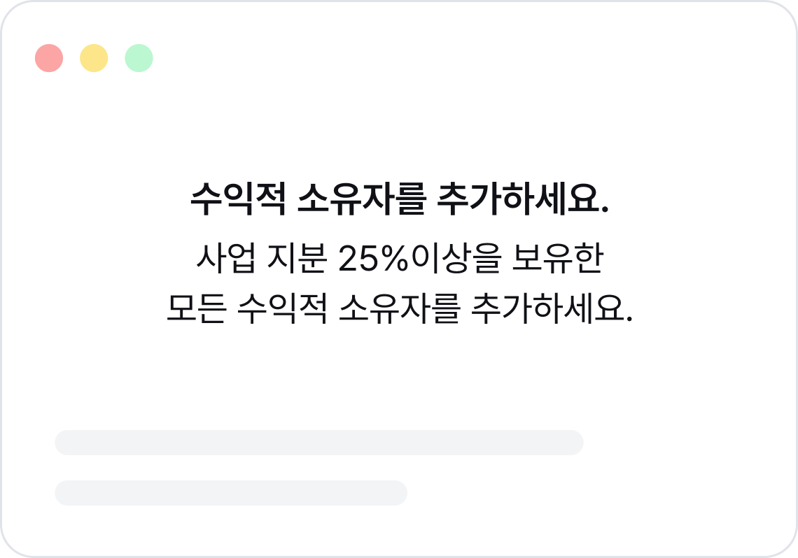
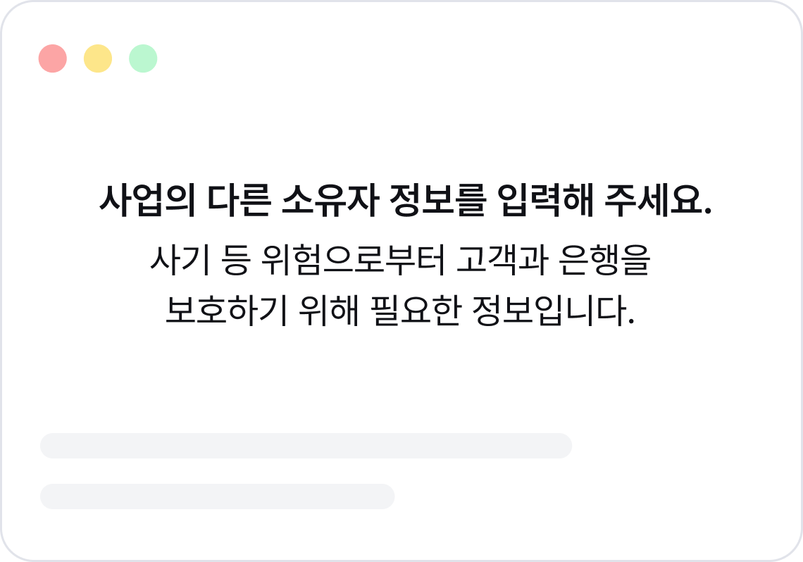
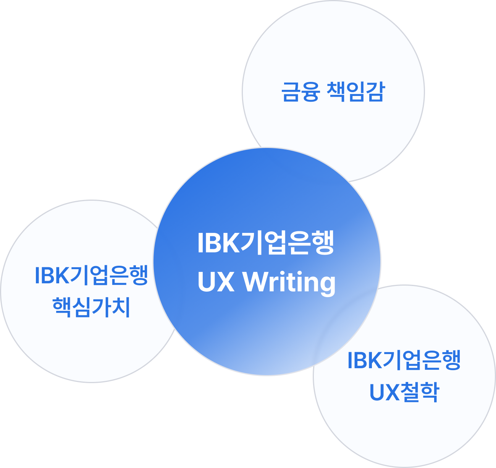

IBK UX Writing 이해
고객이 이해하고, 안심하며, 행동을 이어갈 수 있도록 돕는 금융 언어 기준
UX Writing은 고객이 상황을 이해하고, 정확하게 판단하여
목표를 달성할 수 있도록 언어로 경험을 설계하는 일입니다.
고객에게
전달되는 문구는 서비스 흐름, 고객 맥락, 정보의 우선순위를
고려해 정확하고 일관되게 쓰여야 합니다.
UX Writing 개념
버튼, 안내 문구, 오류 메시지, 알림, 고지 문구 등 화면 안의 모든 텍스트는 고객이 현재 상황을 이해하고 다음 행동을 선택하는 기준이 됩니다.
고객이 메시지를 이해하고 다음 행동을
선택할 수
있도록 언어를 설계하는 일
예: 정보 순서
설계, 용어 기준, 버튼명 기준, 오류·완료 안내 기준 등
고객의 과업 수행을 돕기 위해
화면에 제공되는 모든
인터페이스 문구
예: 화면 제목, 설명, 버튼,
탭, 레이블, 입력 안내, 오류·완료 메시지 등
고객이 특정 순간에 망설이거나
실수하지 않도록
짧게 덧붙이는 도움 문구
예: 입력 조건, 오류
원인, 보안 안내, 도움말, 다음 행동 안내 등
해석과 행동을 바꾸는 문구
UX Writing은 사용자의 신뢰와 행동 결정, 만족도와 오류 경험에 영향을 미칩니다[1].
필요한 정보가 먼저 보이는가
현재 상황을 인지할 수 있는가
이대로 진행해도 괜찮은가
다음에 무엇을 해야 하는가
디지털 금융 서비스에 UX Writing이 필요한 이유
금액, 조건, 제한, 결과를 오해 없이 전달하여
안심하고 거래할 수 있도록 돕습니다.
앱, 웹, 알림톡, SMS/LMS 등 모든 채널에서
일관된
기준으로 안내합니다.
기획자, 디자이너, 검수자가 일관된 기준으로
문구를
작성하고 적절성을 판단할 수 있도록 돕습니다.
예문, 용어집, 체크리스트로
반복되는 문구 작성과 검수 시간을 줄입니다.
좋은 UX Writing을 위한 4가지 공통 작성 기준
| 작성 기준 | 내용 |
|---|---|
| 정확하게 Clear |
고객이 오해 없이 이해할 수 있도록 필요한 정보를 정확하게 제공하고, 핵심 내용을 먼저 안내합니다. 점검 질문 이 문구를 처음 보는 고객도 헷갈리지 않고명확하게 이해할 수 있나요? 확인 기준 핵심 정보(금액·기한·조건)를 먼저 제시했는지,모호하거나 중의적인 표현은 없는지 확인합니다. |
| 간결하게 Concise |
핵심만 남기고, 중복되거나 불필요한 표현은 사용하지 않습니다. 점검 질문 불필요한 수식어나 중복 표현 없이핵심만 써져 있나요? 확인 기준 불필요한 수식어와 중복 표현을 줄이고,핵심만 전달되는지 확인합니다. |
| 일관되게 Consistent |
같은 의미는 같은 표현으로 통일하여 모든 화면에서 일관된 기준을 사용합니다. 점검 질문 같은 의미를 화면마다 다른 용어로쓰고 있지 않나요? 확인 기준 용어집/표기 규칙에 정의된 문구를 기준대로 썼는지,종결어미가 통일되었는지 확인합니다. |
| 고객 친화적으로 User-friendly |
익숙하지 않은 금융용어 대신 고객의 언어를 사용하여 어렵고 낯선 표현을 쉽게 이해할 수 있도록 바꿉니다. 점검 질문 익숙하지 않은 금융용어를 고객이 일상에서사용하는 표현으 로 바꿀 수 있나요? 확인 기준 어려운 용어를 고객이 이해할 수 있는 말로 바꿨는지,일상에서 쓰는 표현인지 확인합니다. |
연금 목표 선택 문구 개선 타행 사례 [2]


변경하여 이해도를 개선했습니다.
사례 출처 : 스위스 Raiffeisen 은행
소상공인 계좌 정보요청 문구 개선 타행 사례 [3]


이탈 지점을 해결하고, 계좌 개설 완료율을 높였습니다.
사례 출처 : 미국 Capital One 은행
- [1] Tversky, A., & Kahneman, D. (1981). The framing of decisions and the psychology of choice. Science, 211(4481), 453–458. https://doi.org/10.1126/science.7455683
- [2] Pieracci, C. (2021, November 4). UX writing at work – a case study. Liip. https://www.liip.ch/en/blog/ux-writing-at-work-a-case-study
- [3] Walsh, S. Z. (2016, November). Design the conversation: A case study on making a digital banking experience clear and human [Slide deck]. SlideShare. https:/www.slideshare.net/slideshow/design-the-conversation-a-case-study-on-making-digital-banking-clear-and-human/68270533
- [4] U.S. Securities and Exchange Commission. (1998). A plain English handbook: How to create clear SEC disclosure documents. Office of Investor Education and Assistance. https://www.sec.gov/pdf/handbook.pdf
- [5] Nielsen, J. (2006, April 16). F-shaped pattern for reading web content. Nielsen Norman Group. https://www.nngroup.com/articles/f-shaped-pattern-reading-web-content-discovered/
- [6] Nielsen, J. (1994, April 24). 10 usability heuristics for user interface design. Nielsen Norman Group. https://www.nngroup.com/articles/ten-usability-heuristics/
- [7] Shneiderman, B., Plaisant, C., Cohen, M., Jacobs, S., Elmqvist, N., & Diakopoulos, N. (2016). Designing the user interface: Strategies for effective human-computer interaction (6th ed.). Pearson.
IBK기업은행의 핵심가치와 UX 철학을 바탕으로
고객이
안심하고 금융 업무를 수행하도록 돕는 언어
IBK기업은행의 UX Writing 원칙은 ‘고객과 함께’라는 핵심가치를
고객의 디지털 금융 경험에 반영하는 원칙입니다.
고객에게
익숙한 사용 흐름은 고려하고, 복잡한 금융 정보는 이해하기
쉽게 정리하며, 예측 가능한 경험을 제공합니다.
이를 통해
고객이
금융 정보를 올바르게 이해하고, 상황에 맞게 판단하여,
필요한 다음 행동을 자연스럽게 이어갈 수 있도록
돕습니다.

| 쉽게 이해되는 금융 정보 |
금융 정보를 고객이 이해할 수 있는 형태로
바꿉니다.
내부 용어와 업무 기준을 그대로 전달하지 않고, 고객의 실제 이용 흐름에 맞춰 이해하기 쉽게 정리합니다. |
|---|---|
| 상황에 맞는 판단 지원 |
고객이 자신의 상황에 맞게 판단할 수 있도록
돕습니다.
고객의 상황과 과업의 중요도에 따라 필요한 정보를 먼저 제공하고, 고객에게 미치는 영향을 분명히 제공해 판단을 돕습니다. |
| 명확한 다음 행동 안내 |
고객이 다음에 무엇을 해야 하는지 바로 알 수
있게 합니다.
현재 상태, 처리 결과, 다음 행동을 명확히 안내합니다. 오류 상황에서도 고객이 과업을 이어갈 수 있도록 이유와 대안을 함께 제시합니다. |
IBK기업은행 UX Writing을 이루는 다섯 가지 가치
IBK기업은행의 브랜드 가치와 운영 데이터를 분석하여 UX
Writing의 바탕이 되는 다섯 가지 가치를 세웠습니다.
고객이 금융 업무를 쉽게 이해하고, 화면과 채널이 달라도
일관된 언어 경험을 할 수 있도록 돕습니다.
새로운 가치와 경험
기존 사용성 존중
믿을 수 있는 경험
고객 요구 우선
예측 가능한 경험
-
혁신
디지털 금융 변화에 맞춰, 고객이 새로운 서비스도 쉽게 이해하고 이용할 수 있도록 언어 가이드를 수립합니다.
-
존중
금융 업무에 익숙한 사용 흐름과 필수 용어는 유지하되, 고객이 이해하기 어려운 부분은 명확하게 개선합니다.
-
신뢰
금액, 조건, 결과, 유의사항을 정확하게 전달하여 금융 업무의 불안을 줄이고, 믿을 수 있는 서비스를 제공합니다.
-
고객중심
은행의 처리 기준보다는 고객이 무엇을 하려는지를 먼저 생각하여 핵심 정보를 먼저 제공합니다.
-
일관성
같은 의미는 같은 표현으로 쓰고, 화면과 채널이 달라도 동일한 구조로 안내하여 일관된 경험을 제공합니다.
고객 경험 기반의 원칙 세분화
다섯 가지 가치를 바탕으로 고객이 금융 서비스를 이용하는 과정(이해, 판단, 행동, 맥락)에 따라 UX Writing 원칙을 4가지로 정리했습니다.
1. 이해
어려운 금융 정보는 쉽게,
같은 의미는 일관되게
전달합니다.
책임있는
믿음직한
유용한
2. 판단
선택에 필요한 조건과 영향을
먼저 확인해야 합니다.
책임있는
함께하는
믿음직한
유용한
3. 행동
현재 상태와 문제를 파악하고,
다음 행동으로
이어가도록 합니다.
함께하는
배려하는
명료한
친절한
믿음직한
4. 맥락
고객과 상황에 맞게
정보량과 표현을 조절합니다.
책임있는
함께하는
명료한
유용한